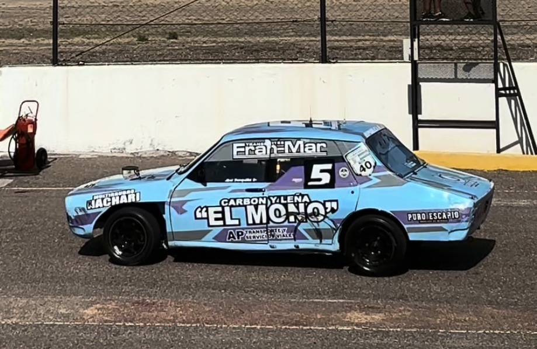

Abel Panquilto llega a Trelew con buenas expectativas tras la victoria en Comodoro

En la previa de la tercera fecha del automovilismo zonal en Trelew, Abel Panquilto dialogó con Cuenta Vueltas 77 sobre el gran presente que atraviesa dentro del R12 después de la victoria conseguida en la última presentación en Comodoro Rivadavia.
El piloto aseguró que llegan con “lindas expectativas” después del triunfo obtenido en la segunda fecha y destacó el buen funcionamiento que mostró el auto en el comienzo del campeonato.
Más allá del toque que los dejó sin resultado en la apertura del año en Trelew, Panquilto remarcó que el rendimiento fue competitivo en ambas fechas disputadas hasta el momento y que el objetivo será mantener ese nivel durante el fin de semana.
Pensando en esta nueva presentación, Abelito señaló que una de las claves estará en mantener la tranquilidad y evitar errores para poder volver a pelear adelante.
Durante la charla, Abelito también habló sobre cómo es compartir pista con su padre, campeón vigente de la categoría, con quien además logró compartir podio en la última fecha disputada en Comodoro.
El piloto aseguró que, más allá del vínculo familiar, dentro de la pista ambos compiten “de igual a igual”, defendiendo posiciones y peleando cada puesto como sucede con cualquier otro rival de la categoría.
Al cierre de la entrevista, Panquilto agradeció especialmente al trabajo realizado por Andrés “Chueco” Ruiz y toda su gente en los motores, además del acompañamiento de sponsors y de quienes colaboraron para que el equipo pueda estar presente fecha tras fecha.
Este fin de semana, el automovilismo zonal disputará la tercera fecha del campeonato en el autódromo Mar y Valle de Trelew, con actividad desde el viernes hasta el domingo. Una nueva oportunidad para acompañar a las categorías regionales y vivir de cerca otro gran fin de semana de automovilismo.